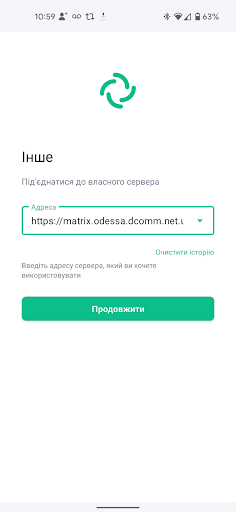

До уваги одеситів!
Підключайтесь до зашифрованого чат-серверу (Matrix), розташованому у Одесі. Працює в локальній мережі вашого провайдера. Ви зможете в ній обмінюватися повідомленнями з близькими та друзями, у випадку, якщо інтернет зникне.
Завантажте додаток (app) для смартфона: https://element.io/get-started#download
Відкрийте додаток. Вас попросить обрати сервер. Знайдіть нижче – “Інше”. Натисніть.

У поле “Інше” введіть наступну назву домашнього сервера: https://matrix.odessa.dcomm.net.ua
Натисніть “продовжити”. Вам запропонує створити обліковий запис.
Як розпочати користуватися:
- Створіть обліковий запис
- Створіть/приєднайтесь до публічної кімнати

- Створіть власну приватну кімнату та відправте посилання друзям

Як це працює:
- усі особисті та групові чати наскрізно зашифровані
- користувачі створюють приватні кімнати та обмінюються своїми ID
- мережа локалізована у Одесі, ніхто ззовні не зможе нею користуватися
Поділіться з друзями та близькими, створюйте ПРИВАТНІ кімнати для обміну повідомленнями.
Більше інформації: https://odessa.dcomm.net.ua/